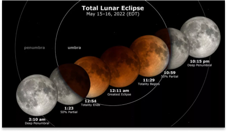
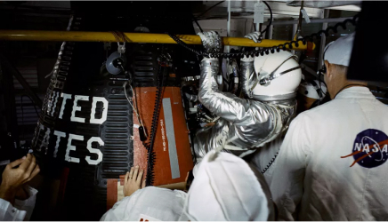

A Super Flower Blood Moon lunar eclipse will occur tonight (May 15) and may be a mesmerizing spectacle for Earth-bound viewers, but for the spacecraft on the moon, it's more of a hindrance.

Super Flower Blood Moon weather forecast: What to expect in the US for the total lunar eclipse
A Super Flower Blood Moon lunar eclipse will occur tonight (May 15) and may be a mesmerizing spectacle for Earth-bound viewers, but for the spacecraft on the moon, it's more of a hindrance.

On This Day In Space: May 16, 2011: Space Shuttle Endeavour launches on final flight
On May 16, 2011, the space shuttle Endeavour launched on its 25th and final flight. This was also the penultimate mission of the entire shuttle program.
A giant asteroid the size of a building just safely zoomed past Earth overnight
A building-sized asteroid whizzed by our planet overnight into Monday (May 9) and at a very safe distance, just like all the other giant space rocks we know of.
Mars sports 'invisible' frost and dust avalanches, and scientists may finally know why
There are many mysteries on Mars, and scientists might have just solved two of them.